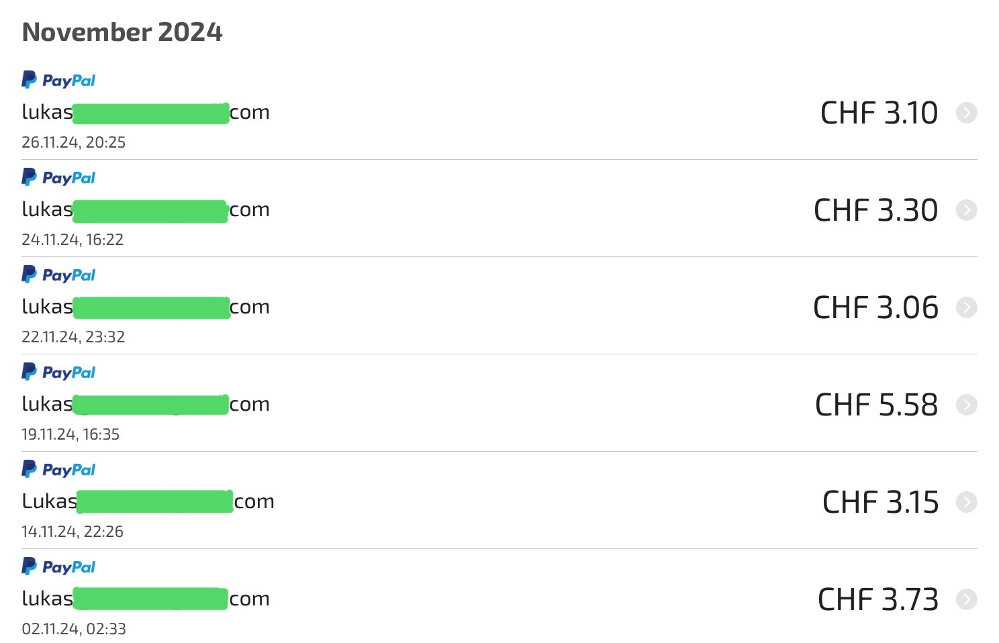

Suchst du nach einer einfachen Möglichkeit, ein bisschen extra Geld zu verdienen? Mit AttaPoll kannst du ganz bequem von deinem Smartphone aus Umfragen beantworten und echtes Geld verdienen – perfekt für kleine Einkäufe oder Taschengeld!
So viel habe ich in einem Monat verdient:
Insgesamt: CHF 22,92!
Klicke auf den Button unten, um AttaPoll herunterzuladen und sofort loszulegen.
Jetzt registrierenTipp: Melde dich hier, um von den besten Umfragen in der Schweiz zu profitieren!